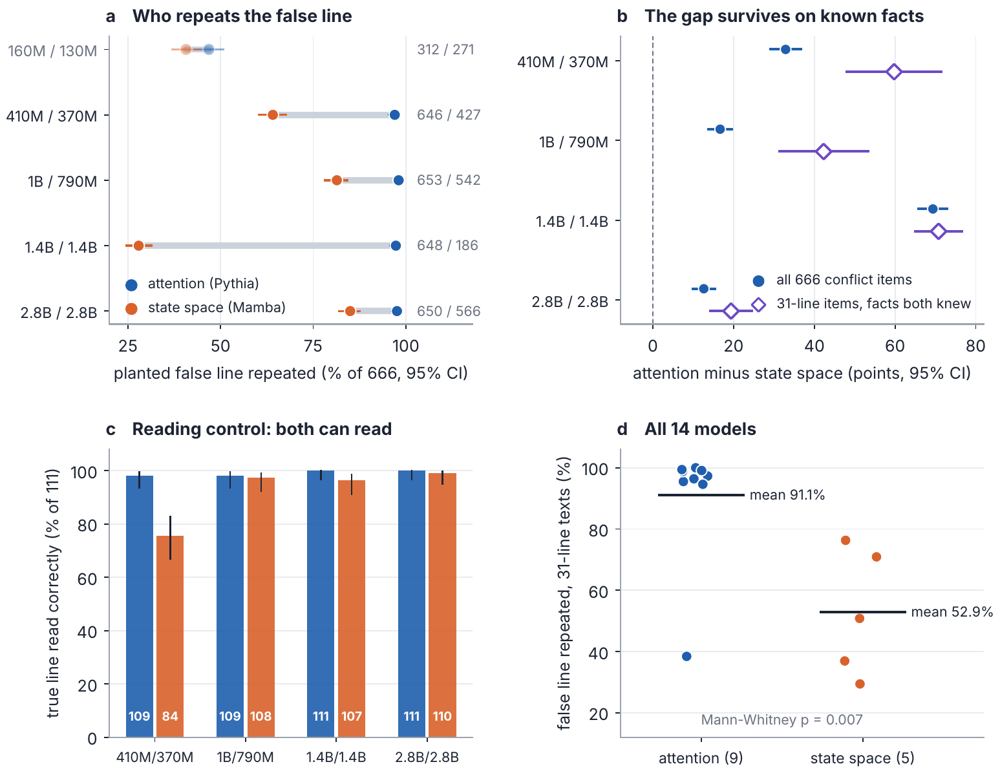

Study A of the B.Sc. thesis MRI of a Mad Machine: The Structural Origins of Hallucination · Department of CSE, Metropolitan University, Sylhet
Question · Design · Results · Meaning · Reproduce · Files · Cite

A language model can repeat a false sentence from its input in the same confident voice it uses for the truth. Is self-attention the part of the model that lets that happen?
To answer it, everything else has to stay fixed. Pythia (attention) and Mamba (selective state space) were trained on the same data (the Pile) with the same tokenizer (GPT-NeoX) at matched sizes. The only manipulated variable is how the model mixes information across the sequence. Any behavioural difference can therefore be attributed to the mixer, not to data or scale.
| Matched pairs | Pythia-160M / Mamba-130M · 410M / 370M · 1B / 790M · 1.4B / 1.4B · 2.8B / 2.8B |
| Further attention models | Qwen2.5-0.5B, 1.5B, 3B · SmolLM2-1.7B (14 models in total) |
| Probe 1: free recall | 200 SimpleQA questions, 2.8B pair, greedy decoding, three-shot prompt. Two annotators scored blind into correct / factual error / abstention / degenerate (Cohen's κ = 0.85) |
| Probe 2: context conflict | 111 facts (capitals, chemical symbols, currencies, book authors, painters, planet facts) × 9 conditions = 999 items per model, 666 of them conflict items. Scored automatically |
| Hardware | One ASUS A16 laptop, RTX 5050 (8 GB). Models run one at a time, fp16 |


| What we measured | Attention · Pythia-2.8B | State space · Mamba-2.8B | Test |
|---|---|---|---|
| Free recall: SimpleQA answered correctly, of 200 | 3 | 3 | p = 1.000 |
| Planted false line repeated, of 666 | 650 | 566 | 90 vs 6 discordant · p = 2.5 × 10⁻²⁰ |
| Same, on facts both models knew (31-line texts), of 279 | 264 | 210 | p = 9.0 × 10⁻¹³ |
| Planted true line read correctly (31-line texts), of 111 | 111 | 110 | reading control |
All five matched pairs (conflict items followed, of 666)
| Pair (attention vs state space) | Pythia | Mamba | Discordant | Exact McNemar p |
|---|---|---|---|---|
| 160M vs 130M | 312 | 271 | 152 / 111 | 0.0135 |
| 410M vs 370M | 646 | 427 | 228 / 9 | 5.3 × 10⁻⁵⁶ |
| 1B vs 790M | 653 | 542 | 113 / 2 | 3.2 × 10⁻³¹ |
| 1.4B vs 1.4B | 648 | 186 | 462 / 0 | 1.7 × 10⁻¹³⁹ |
| 2.8B vs 2.8B | 650 | 566 | 90 / 6 | 2.5 × 10⁻²⁰ |
Group test on the 31-line texts, all 14 models: attention mean 91.1% vs state space 52.9% (Mann-Whitney p = 0.007). At 160M the pattern is mixed: on facts both models knew, the attention model followed the false line less often (8 vs 14 of 15).

Publication figure. a, share of the 666 conflict items on which each model repeated the planted false line (Wilson 95% intervals). b, paired difference, all items vs facts both models knew. c, reading control. d, all 14 models. Vector versions are in
figures/.
IMPORTANT Removing attention leaves recall from memory unchanged. It changes whether a passage can override what the model knows, even when the model knew better.
Attention is the machinery of context grounding, and it cuts both ways. It is what makes in-context and retrieval-augmented use work when the text is true, and a direct route to confident error when the text is false. A retrieval system built on an attention model will tend to repeat what it retrieves, so the provenance of retrieved text matters as much as the model.
Honest bounds. These are behavioural measurements, so they say what the mixer does, not which circuit does it. Part of the state-space models' resistance is a known limit of state-space models at in-context retrieval, which is why the reading control and the known-facts test are reported beside the main result. The comparison covers base models from 130M to 2.8B; larger and hybrid architectures are the natural next step.
Note on the 24-fact pilot (kept for the record, with a correction)
An earlier pilot used 24 facts and 9-line texts
(study1b_pilot/). In that pilot both 2.8B models
followed the planted statement on all 72 context items, and the
1.4B pair separated: Pythia-1.4B 70 of 72, Mamba-1.4B
17 of 72 (53 vs 0 discordant). A previous version of this README
credited the 70/72 vs 17/72 split to the 2.8B pair and to 31-line texts;
it belongs to the 1.4B pair and 9-line texts. The final 111-fact probe
removes the pilot's ceiling, replicates the 1.4B split and also
separates the 2.8B pair.
Recompute every reported number from the released files (no GPU needed; run in PowerShell inside the repository):
py -m pip install pandas scipy statsmodels; py code\analyze_study1a.py; cd study1b; py code\analyze_probe.py; py code\tables_by_model.py; py code\controls_known_facts.py; cd ..Expected lines include Cohen's kappa: 0.853,
paired correct ... exact McNemar p=1.000 and
pythia-2.8b vs mamba-2.8b-hf all n=666 followed 650 vs 566 ... McNemar p=2.5e-20.
Regenerate the model outputs (one 8 GB GPU; the RTX 5050 is Blackwell and needs the CUDA 12.8 build of PyTorch):
py -3.12 -m venv p5env; .\p5env\Scripts\Activate.ps1; pip install --index-url https://download.pytorch.org/whl/cu128 torch; pip install -r requirements.txt; python code\run_free_recall.py run --model EleutherAI/pythia-2.8b --pool data\questions.json --out data\outputs_pythia_2_8b.json; python code\run_free_recall.py run --model state-spaces/mamba-2.8b-hf --pool data\questions.json --out data\outputs_mamba_2_8b.jsonFor the 14-model context probe see study1b/README.md (about 3–4
hours for all 14 models; run_probe.py resumes from existing
files).
The-Attention-Ablation-Test/
├── code/
│ ├── run_free_recall.py runs a model over the 200 questions; builds the blind sheet
│ └── analyze_study1a.py agreement, label counts, paired McNemar tests
├── data/ probe 1: free recall
│ ├── questions.json 200 SimpleQA questions (seed 42)
│ ├── outputs_pythia_2_8b.json raw outputs
│ ├── outputs_mamba_2_8b.json raw outputs
│ ├── scoresheet_blind.csv shuffled, de-identified sheet the annotators scored
│ ├── model_key.csv response-to-model key, opened only after scoring
│ └── annotator_A.csv, annotator_B.csv independent blind labels
├── study1b/ probe 2: context conflict, 14 models
│ ├── pool_probe_v2.json 999 items with prompts
│ ├── outputs/*.jsonl raw outputs, 999 lines per model
│ ├── results/ per-model rates, pair tests, every scored item
│ └── code/ build, run, score, tables, known-facts control
├── study1b_pilot/ the earlier 24-fact pilot
├── figures/ publication figures (PNG + PDF)
├── notebooks/ notebook mirror of the free-recall setup
├── assets/ artwork for this page (light and dark)
├── docs/ this page as a website (GitHub Pages)
├── .github/ issue and pull-request templates
├── CITATION.cff · LICENSE · LICENSE-DATA.md · requirements.txt
├── CONTRIBUTING.md · CODE_OF_CONDUCT.md · SECURITY.md · .zenodo.jsonWhere the old file names went
| Old name | New location |
|---|---|
p5_local_harness_v2.py |
code/run_free_recall.py (same code) |
pool_v2.json |
data/questions.json |
pythia_2_8b.json, mamba_2_8b.json |
data/outputs_pythia_2_8b.json,
data/outputs_mamba_2_8b.json |
p5_scoresheet_BLIND.csv |
data/scoresheet_blind.csv |
p5_key_SEALED.csv |
data/model_key.csv |
p5_scored_SADI.csv,
p5_scored_DEWAN.csv |
data/annotator_A.csv,
data/annotator_B.csv |
Thesis_2_0_RTX5050.ipynb |
notebooks/Thesis_2_0_RTX5050.ipynb |
The two architectures in 3D
Two stacks on the same footing: attention (red layers) and state space (teal layers), five layers each.
The same model as an interactive object: drag to rotate, scroll to zoom.
Use "Cite this repository" in the sidebar (from
CITATION.cff), or:
@misc{sadi2026attentionablation,
title = {The Attention Ablation Test},
author = {Sadi, Md. Rejaul Korim and Tasin, Toufiqur Rahman and Chowdhury, Dewan Fahad},
year = {2026},
howpublished = {\url{https://github.com/RejaulKorimSadi/The-Attention-Ablation-Test}},
note = {Study A of the B.Sc. thesis "MRI of a Mad Machine: The Structural Origins of Hallucination", Metropolitan University, Sylhet}
}The full thesis, with Studies B and C, is at MRI of a Mad Machine. The experiment is also reported in R1: Sadi, Tasin and Naeem, From Architecture to Output: Testing the Structural Origins of Hallucination and the Amplifying Role of Data, under review at NEJLT, arXiv:2606.07537.

Source, data and code: github.com/RejaulKorimSadi/The-Attention-Ablation-Test